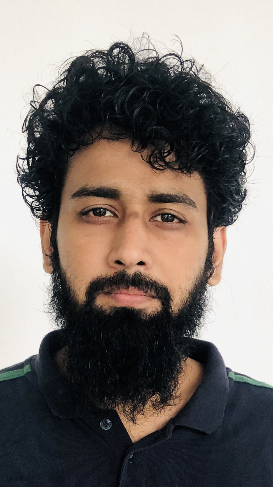

Introduction
This project is a physics outreach event at a Juvenile Correctional Facility (Children's Jail), aimed at exposing young residents to the wonders of science through simple, relatable talks. The session hopes to spark curiosity, encourage constructive thinking, and offer a positive, educational break from routine facility life.
Inspiration
This activity was inspired by Dr. Gediminas Sarpis, who ran a Particle Physics in Prisons initiative at Kaunas Prison in Lithuania, together with the NGO Inscribed Hands, which brings volunteers into prisons to provide activities and training. For more information, read Inscribed Hands: Particle Physics in Prisons.

Objectives
- Introduce juvenile residents to fundamental and modern concepts in physics in a fun, non-technical manner.
- Inspire curiosity, critical thinking, and a positive outlook toward learning and science.
- Provide a constructive, engaging activity as part of the facility's rehabilitation and educational efforts.
- Create a friendly, encouraging interaction between university students and the young residents.
Event Details
| Event title | Physics Outreach Session |
|---|---|
| Venue | Juvenile Correctional Facility (Children's Jail) |
| Duration | 1.5 – 2 hours |
| Audience | Juvenile residents of the facility |
| Speakers | Graduate students from NED University of Engineering & Technology and University of Karachi |
| Topics | Particle Physics, Medical Physics, and Quantum Physics |
| Refreshments | Sweets will be distributed among the audience |
Program Outline
- Welcome & Introduction (10 min): brief opening remarks and introduction of speakers.
- Talk 1: Particle Physics (20–25 min): an easy introduction to atoms, particles, and the building blocks of matter.
- Talk 2: Medical Physics (20–25 min): how physics is used in hospitals and medicine (X-rays, imaging, radiation therapy).
- Talk 3: Quantum Physics (20–25 min): a simplified, fascinating look into the quantum world.
- Interactive Q&A (15–20 min): open floor for questions and discussion with the speakers.
- Sweets & Closing Remarks (10 min).
Speakers
The talks are delivered by graduate students from NED University of Engineering & Technology and the University of Karachi, who bring subject expertise along with the enthusiasm to communicate complex ideas simply.

Muhammad Maaz Adnan
Speaker

Shafiq Ur Rehman
Speaker
Logistics & Requirements
- Permission and coordination with facility administration for scheduling and access.
- A hall or common room with seating for the audience.
- Basic audio-visual support (projector/screen, microphone, if available).
- Sweets/refreshments for distribution at the end of the session.
- Presence of facility staff for supervision throughout the event.
Expected Outcome
The session should leave the young residents with a positive and memorable experience, a renewed interest in learning, and a sense of encouragement from interacting with university students who volunteer their time to share knowledge and hope.
Conclusion
We request approval and support from the facility administration to conduct this physics outreach session. We believe such educational and motivational activities can play a meaningful role in the personal and intellectual growth of the young residents.